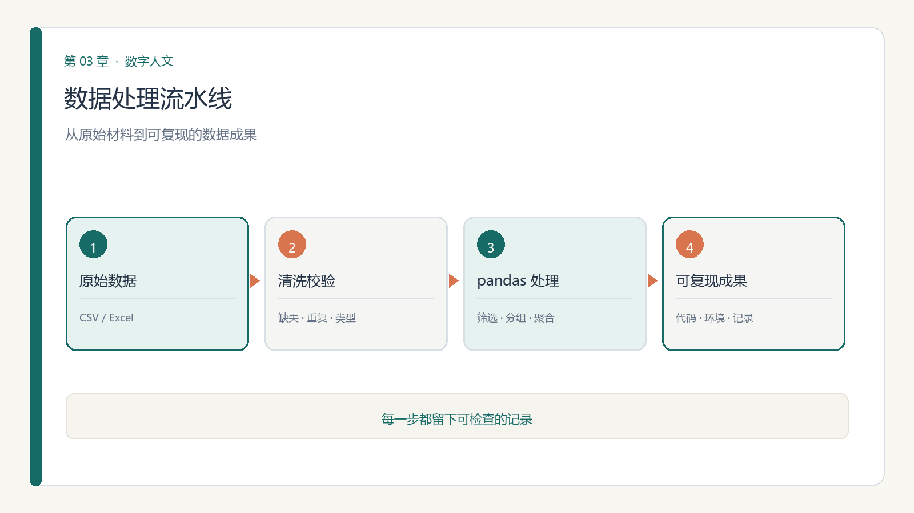

第 3 章 数据处理基础：Python 与 pandas
学习目标：完成本模块后，你应能
（1）在统一预部署环境中运行第一段 Python 并读懂报错；
（2）用 pandas 读入、筛选、分组聚合一份 CSV；
（3）理解"可复现流水线"的含义——随机种子、版本、环境皆可见；
（4）独立完成第一次数据清洗：处理缺失、重复与类型错误。
3.0 思政导入
思政融入（课程思政）：“可复现”看似技术习惯，实则关乎学术诚信与工匠精神。每一次如实记录、每一份可重跑的代码，都是对真理的尊重，也是对后学的负责。诚信是科研底线，也是立德树人的根本——从第一行代码起，就把“求真、求实”刻进习惯。
思政案例（课程思政示范案例 / AI 思政课 知识库）：可参照《会计学》课程思政“人无信不立，业无信不兴”的职业道德与法律意识——可复现、如实记录，正是学术诚信的底线训练。

3.1 为什么要学一点 Python：不是要你当程序员
本书承诺"可复现"，而可复现的底线是把操作变成代码。你不必成为算法工程师，但值得亲手写出第一条流水线：别人能重跑你的步骤，得到一样的结果。Python 是这门课的统一语言，因为它免费、生态成熟、中文社区友好。
导学3.2 十分钟上手：变量、列表、字典与函数
只需要四个概念就能开工：
- 变量：
n = 1949把"年份"存起来； - 列表：
years = [1949, 1989, 2024]装一组值； - 字典：
record = {"name": "Busa", "year": 1949}用"键"取"值"； - 函数：
def count(items): ...把重复操作打包复用。
记住：Python 对缩进敏感，层级靠空格表达，这点和写大纲一样自然。
理论3.3 pandas 三件套：Series、DataFrame 与读写
pandas 是数据科学的"表格引擎"。两类核心对象：
- Series：一列带索引的值（如某朝代所有诗人的生年）；
- DataFrame：多列组成的表（如"诗人—生年—籍贯—作品数"）。
读写一行就够：df = pd.read_csv("poets.csv")、df.to_csv("clean.csv", index=False)。本环境已预装 pandas，导入即用的代码不依赖外网。
3.4 数据清洗四板斧
真实人文数据几乎没有"干净的"。常做的四件事：
- 缺失：
df.dropna()丢空行，或df.fillna(0)补默认值； - 重复：
df.drop_duplicates()去重（同一首诗被不同库收录两次很常见）； - 类型：
df["year"] = df["year"].astype(int)把"字符型年份"变成能算的数； - 重命名：
df.rename(columns={"籍貫":"籍贯"})统一字段名，避免后续对不上。
经验：清洗不是"美化"，而是"留痕"。每步改动都写进脚本，别人才能复现你的取舍。
3.5 分组与聚合：groupby 的人文用法
groupby 是提问的利器。例如"统计每个朝代各有多少位诗人"：
import pandas as pd
df = pd.read_csv("poets.csv")
print(df.groupby("dynasty")["name"].count())一句话，就把"感觉宋代诗人多"变成了"数出来宋代 312 位、唐代 228 位"。本模块 V2.1 文献中的 Data Wrangling using Pandas、Chapter 3: Introduction to Pandas、Chapter 6: Data Cleaning Tasks 是系统参照。
理论3.6 伦理坐标：可复现即学术诚信（本模块核心能力）
- 随机种子：凡有随机（抽样、拆分），先
random.seed(42)，否则别人跑不出你的结果； - 版本留痕：记下 pandas / Python 版本，依赖变了行为可能变；
- 环境一致：统一预部署环境，避免"在我电脑上是好的"；
- 不篡改：清洗可以丢弃异常值，但必须说明为何丢弃，而非悄悄抹掉。
一条红线：为"让结论好看"而删改数据，是比代码写错更严重的失信。
现实案例 3.1（2026 年"学术打假"风暴：数据造假的统计指纹）
2026 年 4 月起，一位科普博主连续发布视频，质疑多位知名学者发表在《自然》(Nature) 及其子刊上的论文存在数据造假。其方法本质就是数据审计：下载论文补充材料，逐一检查原始数值的分布是否符合真实实验应有的随机性。被指出的典型"统计指纹"有三类——
- 过度规律：多组测量值之间呈现固定的绝对差值（有研究者估算，此类规律自然发生的概率低至 10⁻²³ 量级）；
- 末位偏态：数千个数值中，某一末位数字的出现频率是其他数字的十几倍；
- 整列复制：一列数据复制后统一加上一个小增量，形成"看起来像实验、实为填表"的伪数据。
后续进展均出自官方通报，可逐条溯源：2026 年 5 月，涉事高校通报认定该 Nature 论文存在学术不端，通讯作者被免去行政职务并降级，第一作者被解除聘用关系；7 月 30 日，Nature 正式撤稿，同日《自然-癌症》撤回另一篇涉事论文，《自然-细胞生物学》发布更正声明；8 月，国家自然科学基金委员会通报的科研不端案件中，有 4 起回应了此次网络举报，撤销项目并追回资金。同期《科学》(Science) 也就另一篇论文发布了"编辑关注声明"。
与本课程的关系：把这些造假数据交给模块二学的"数据审计"三步法、本模块的"清洗四板斧"，几乎一眼可辨。可复现从来不只是技术要求——它是让造假无法藏身的最低门槛。
但请同时记住另一面：Nature 系列期刊在回应中强调，所有相关案例仅占 2020 年以来中国作者在其原创研究期刊所发表论文的 0.06%。问题的严重性在于影响与后果，而不在比例；既不能讳疾忌医，也不能以偏概全地否定整个学术共同体。
资料来源：Nature 撤稿声明（2026-07-30）；涉事高校调查通报（2026-05）；国家自然科学基金委员会科研不端案件通报（2026-08-28）；Science 编辑关注声明（2026-07-30）。
3.7 第一次动手：用真实数据做 EDA
小练习 3.1（可复现清洗）：取模块二小练习里你审计过的数据集（或任意一份 CSV），在预部署环境用 pandas 完成：① 读入并 .info() 看字段与缺失；② 处理缺失/重复；③ 用一个 groupby 回答一个真问题（如"按年份统计文献数量"）；④ 把清洗后结果存为新 CSV，并在报告里写明每一步。这就是"采集→清洗"这一段的第一次落地。
3.8 第二次动手：用 groupby 复现一张论文统计表
本节按入门、进阶、高阶三个层级提供 9 个可迁移到文史研究的 Python 与 pandas 案例。每个案例都说明要解决的任务和适用场景；代码使用小型示例数据，可直接运行。处理自己的材料时，把示例数据替换为经许可取得的 CSV 或表格，并核对字段名。
入门：读入、筛选、计数
案例 1：打开并检查一份文献目录
任务：读取包含题名、作者、年代等字段的 CSV，先确认数据规模、字段名称和前几行内容。使用场景：刚拿到古籍目录、地方志书目或档案清单时，先了解数据长什么样，再决定如何清洗与分析。示例用内存中的小 CSV，处理真实文件时可将 StringIO(...) 换成文件路径。
from io import StringIO
import pandas as pd
catalog = pd.read_csv(StringIO("""题名,作者,年代
颜氏家训,颜之推,北齐
乡土中国,费孝通,1947"""))
print("行数、列数：", catalog.shape)
print("字段：", catalog.columns.tolist())
print(catalog.head())案例 2：按关键词查找相关材料
任务：从题名中筛选包含“家训”的记录，并查看命中的题名。使用场景：从大型书目、报刊或档案目录中初步圈定研究材料；关键词检索只是筛选线索，仍需人工核验异名、误命中和遗漏。
import pandas as pd
catalog = pd.DataFrame({
"题名": ["颜氏家训", "唐人传奇选", "朱子家训辑要"],
"年代": ["北齐", "唐", "清"]
})
matched = catalog[catalog["题名"].str.contains("家训", na=False)]
print(matched)案例 3：统计各类别的材料数量
任务：按朝代统计诗作记录数，并按数量从多到少排列。使用场景：复现论文中的“各朝代作品数量”基础统计表，或先了解一个诗歌语料的年代分布；结果反映的是当前数据集的收录情况，不等同于历史上的真实创作总量。
import pandas as pd
poems = pd.DataFrame({
"题名": ["春望", "静夜思", "赤壁", "山行"],
"朝代": ["唐", "唐", "唐", "晚唐"]
})
counts = poems.groupby("朝代").size().sort_values(ascending=False)
print(counts)进阶：清洗、交叉统计、合并资料
案例 4：清理重复记录并规范文字字段
任务：去掉题名首尾空格，再按题名和作者识别重复记录，同时单独检查缺失值。使用场景：合并多个目录或从不同数据库导出书目后，处理格式差异与重复收录。去重前应确认“题名 + 作者”足以识别同一条记录，不能把同名异作误删。
import pandas as pd
catalog = pd.DataFrame({
"题名": [" 乡土中国 ", "乡土中国", "城南旧事"],
"作者": ["费孝通", "费孝通", "林海音"],
"年代": [1947, 1947, None]
})
catalog["题名"] = catalog["题名"].str.strip()
catalog = catalog.drop_duplicates(subset=["题名", "作者"])
print("缺失值数量：")
print(catalog.isna().sum())
print(catalog)案例 5：制作“朝代 × 体裁”交叉表
任务：统计每个朝代中不同体裁的作品数量，形成行列交叉的表格。使用场景：比较不同历史时期的文类分布，或复现论文中的分类统计表；体裁标签应先统一口径，避免把“词”“词作”等不同写法误当成不同类别。
import pandas as pd
works = pd.DataFrame({
"朝代": ["唐", "唐", "宋", "宋", "宋"],
"体裁": ["诗", "词", "诗", "词", "词"],
"题名": ["春望", "忆江南", "山行", "水调歌头", "念奴娇"]
})
table = works.pivot_table(
index="朝代", columns="体裁", values="题名",
aggfunc="count", fill_value=0
)
print(table)案例 6：合并人物表与作品表并检查未匹配记录
任务：按人物编号把作品记录与人物生平表合并，并找出没有匹配到人物信息的作品。使用场景：将人物、作品、地点等分散表格连接起来建立分析数据；未匹配记录可能来自编号错误、异名或缺失资料，应核查后再决定如何处理。
import pandas as pd
people = pd.DataFrame({
"人物编号": [1, 2],
"作者": ["李白", "杜甫"],
"籍贯": ["碎叶", "巩县"]
})
works = pd.DataFrame({
"题名": ["静夜思", "春望", "佚名诗"],
"人物编号": [1, 2, 9]
})
joined = works.merge(people, on="人物编号", how="left", indicator=True)
print(joined)
print("待核查记录：")
print(joined.loc[joined["_merge"] == "left_only", ["题名", "人物编号"]])高阶：复合指标、时间趋势、可复现抽样
案例 7：一次计算多项朝代统计指标
任务：按朝代同时统计作品条数、不同题名数和作品年代的平均值，再按作品数排序。使用场景：从单一计数扩展到多指标描述，制作可与论文表格逐项核对的汇总结果。平均年代只适用于年代字段含义一致且可量化的材料，统计口径需在报告中说明。
import pandas as pd
works = pd.DataFrame({
"朝代": ["唐", "唐", "宋", "宋"],
"题名": ["春望", "静夜思", "山行", "水调歌头"],
"年份": [757, 726, 1085, 1076]
})
summary = works.groupby("朝代").agg(
记录数=("题名", "size"),
不同题名数=("题名", "nunique"),
平均年份=("年份", "mean")
).sort_values("记录数", ascending=False)
print(summary)案例 8：比较各年代的体裁比例
任务：把年份换算为年代，统计每个年代各体裁的作品数与该体裁在当年代的比例。使用场景：观察某类文体在不同时段的相对变化；比例有助于避免各年代收录总量不同造成的直接计数误读，但不能单独证明文体兴衰的历史原因。
import pandas as pd
works = pd.DataFrame({
"年份": [1012, 1028, 1035, 1112, 1124],
"体裁": ["诗", "词", "诗", "词", "词"]
})
works["年代"] = works["年份"] // 10 * 10
counts = works.groupby(["年代", "体裁"]).size().reset_index(name="篇数")
counts["年代内比例"] = (
counts["篇数"] / counts.groupby("年代")["篇数"].transform("sum")
)
print(counts)案例 9：按类别抽取可复现的核查样本
任务：从每种体裁中各抽取一条记录，固定随机种子，使同一代码重复运行得到相同样本。使用场景：人工抽查 OCR 结果、主题标签或分类标注的质量；抽样用于核验，不代表全部材料都已检查，报告中应记录抽样规则与样本量。
import pandas as pd
records = pd.DataFrame({
"题名": ["春望", "静夜思", "山行", "水调歌头", "念奴娇"],
"体裁": ["诗", "诗", "诗", "词", "词"]
})
sample = records.groupby("体裁", group_keys=False).sample(
n=1, random_state=42
)
print(sample)综合练习与评价：任选一篇采用“按年份 / 类别分组计数”的人文论文，使用入门案例完成基础计数，再选一个进阶或高阶案例扩展分析；与原表逐格核对，并说明数据来源、字段口径、未匹配或缺失记录的处理方式。产出：可复现的代码、统计表和核对说明。评价：代码与统计正确（40%）、与原表核对有据（40%）、对数据限制解释清晰（20%）。
3.9 本章小结与思考
带走三件事：pandas 三件套（Series/DataFrame/读写）、清洗四板斧（缺失/重复/类型/重命名）、可复现纪律（种子/版本/环境/留痕）。模块一说的流水线"采集→清洗→建模→验证→沟通"，你今天走完了前两步。
思考题
- 找一份你专业里的 Excel/CSV 数据，用 3.4 的四板斧检查它有哪些"不干净"的地方？
- "可复现"在人文研究中为何比在实验中更难？举一个你领域的例子。
- 如果清洗时必须丢弃一批异常记录，怎样做才既诚实又不误导？
3.10 学术前沿与延伸阅读
下表为通过 OpenAlex（开放学术图谱，聚合期刊/会议/预印本）、DBLP（CS 会议期刊，含 SIGIR/UIST/DH/IJDAR/EPIA）、arXiv（预印本）、CrossRef（期刊 DOI 元数据）、CORE（开放获取库）检索到的真实文献，按来源/被引排序，供延伸阅读与实验报告引用。
| 来源 | 年份 | 标题（链接） | 作者 / 场所 |
|---|---|---|---|
| CrossRef | 2024 | Data Wrangling using Pandas | Data Engineering for Machine Learning Pipelines（被引 1） |
| CrossRef | 2022 | Chapter 1: Introduction to Python | Data Wrangling Using Pandas, SQL, and Java |
| CrossRef | 2022 | Chapter 7: Data Wrangling | Data Wrangling Using Pandas, SQL, and Java |
| CrossRef | 2023 | Data wrangling with Python | Python Data Science |
| CrossRef | 2022 | Chapter 3: Introduction to Pandas | Data Wrangling Using Pandas, SQL, and Java |
| CrossRef | 2022 | Chapter 6: Data Cleaning Tasks | Data Wrangling Using Pandas, SQL, and Java |
| CrossRef | 2022 | Preface | Data Wrangling Using Pandas, SQL, and Java |
| CrossRef | 2026 | 28 Data Visualization with Pandas | Numeric Python |
课堂复现（检索即方法）：下列代码直接调用 OpenAlex 免费 API 复现本模块文献检索（无需密钥）。
import urllib.request, urllib.parse, json
q = 'data science digital humanities'
url = 'https://api.openalex.org/works?search=' + urllib.parse.quote(q) + '&per_page=10&sort=cited_by_count:desc'
oa = json.loads(urllib.request.urlopen(url, timeout=30).read())
for w in oa['results']:
print(w['publication_year'], w['title'], '->', (w.get('primary_location') or {}).get('source', {}).get('display_name'))误用警示：① arXiv 预印本未经同行评审，引用须标 preprint 并追正式版；② 被引数代表影响力非结论正确；③ 商业库（WoS/Scopus/Elsevier/JSTOR/CNKI）本环境无订阅，需机构账号获取后再并入。
与实验衔接：将任一方法对照本模块实验改写数据集或提示词，即可形成有学术依据的结题报告。
本章配套游戏：可复现流水线